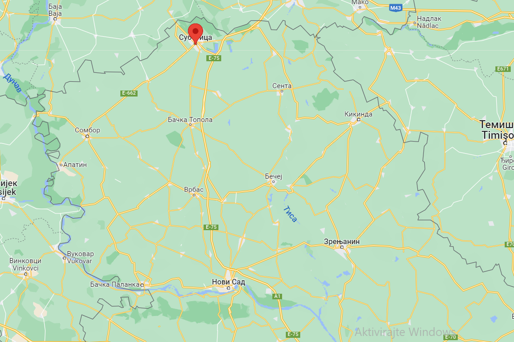

Између две реке Дунава и Тисе, Суботица је предивни град са великим културним наслеђем, надалеко познат по својој јединственој атмосфери, врхунској храни и квалитетним винима. Дуго времена је Суботица била на граници између две велике силе Мађарске и Турске, тако да није никакво чудо да се утицај ове две силе и данас веома примећује у Суботици. Суботица је пуна занимљивих места која су савршена за релаксацију и разоноду, али поред самог града, непосредна околина Суботице једнако је примамљива колико и њен центар.
Општина Суботица сем града Суботице садржи још 18 насеља. Та насеља су:
| Бајмок | Бачки Виногради | Бачко Душаново |
| Биково | Вишњевац | Горњи Таванкут |
| Доњи Таванкут | Ђурђин | Келебија |
| Љутово | Мала Босна | Мишићево |
| Нови Жедник | Стари Жедник | Палић |
| Хајдуково | Чантавир | Шупљак |